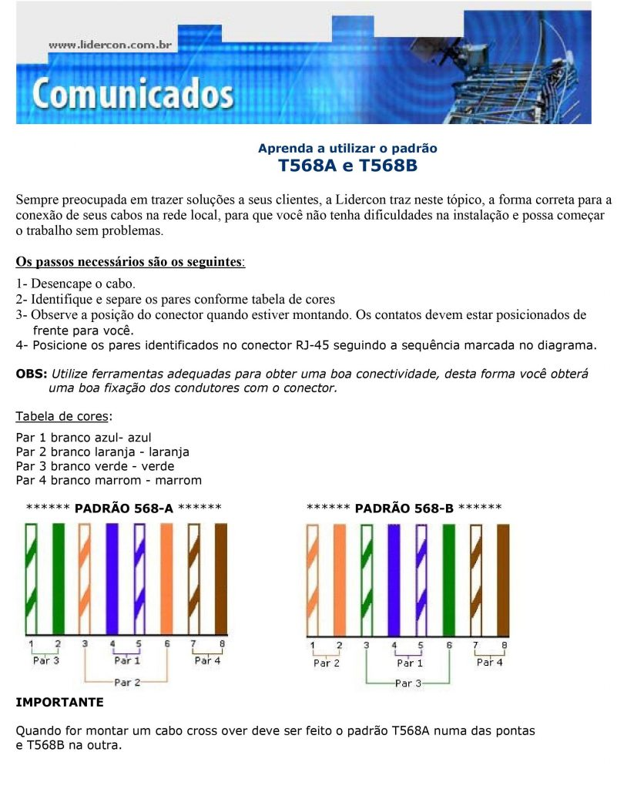

Configuração da Rede Interna
Conceitos Básicos
Conceito de Servidor
Um servidor é um sistema computacional ou software que fornece serviços a outros sistemas, conhecidos como clientes, em uma rede. Eles podem oferecer uma variedade de serviços, como armazenamento de dados, aplicações, e web.
DNS (Domain Name System)
O DNS é um sistema que traduz nomes de domínio (como www.exemplo.com) em endereços IP (como 192.168.1.1). Isso permite que os usuários acessem recursos usando nomes amigáveis.
HTTP (Hypertext Transfer Protocol)
O HTTP é um protocolo de comunicação utilizado para a transferência de informações na web. Ele permite que os navegadores acessem recursos do servidor, como páginas HTML, imagens, e outros conteúdos.
DHCP (Dynamic Host Configuration Protocol)
O DHCP é um protocolo de rede que permite a configuração automática de dispositivos em uma rede. Ele atribui endereços IP e outras informações de configuração a dispositivos clientes automaticamente.
Equipamentos e suas Funções
| Equipamento |
Função |
| Roteador |
Encaminha pacotes de dados entre diferentes redes. |
| Switch |
Conecta dispositivos em uma rede local e permite comunicação. |
| PCs |
Dispositivos clientes que acessam os serviços do servidor. |
| Servidor Web |
Armazena e fornece páginas web (HTTP). |
| Servidor DNS |
Resolve nomes de domínio em endereços IP. |
| Servidor DHCP |
Atribui endereços IP dinâmicos e configurações. |
Configuração dos Servidores
Servidor DNS
Configuração do Servidor DNS:
- IP: 192.168.1.2
- Registro DNS: www.meusite.com → 192.168.1.10
Servidor HTTP
Configuração do Servidor Web:
- IP: 192.168.1.10
- Serviço HTTP: Habilitado
Servidor DHCP
Configuração do Servidor DHCP:
- IP: 192.168.1.5
- Pool de IP: 192.168.1.20 a 192.168.1.50
- Máscara de Sub-rede: 255.255.255.0
- Gateway: 192.168.1.1
- DNS: 192.168.1.2
Configuração do Roteador
Código de configuração básica do roteador:
enable
configure terminal
interface gig0/0
ip address 192.168.1.1 255.255.255.0
no shutdown
exit
crimpagem
pinagem

Modelos de Rede: OSI e TCP/IP
Modelo OSI (Open Systems Interconnection)
O Modelo OSI é uma arquitetura de rede que divide o processo de comunicação em sete camadas distintas, cada uma responsável por diferentes aspectos da comunicação de rede:
- Camada Física (Layer 1): Transmissão de dados brutos através de meios físicos (ex.: cabos, sinais).
- Camada de Enlace de Dados (Layer 2): Transferência de dados entre nós na mesma rede e detecção de erros (ex.: Ethernet, PPP).
- Camada de Rede (Layer 3): Gerenciamento do roteamento de dados entre redes (ex.: IP).
- Camada de Transporte (Layer 4): Garantia de transferência confiável de dados (ex.: TCP, UDP).
- Camada de Sessão (Layer 5): Controle das conexões entre computadores (estabelecimento e término de sessões).
- Camada de Apresentação (Layer 6): Formatação e tradução dos dados (inclui criptografia).
- Camada de Aplicação (Layer 7): Fornecimento de serviços de rede diretamente para as aplicações (ex.: HTTP, FTP, SMTP).
Modelo TCP/IP
O Modelo TCP/IP é um conjunto de protocolos que governam a comunicação pela internet, organizado em quatro camadas:
- Camada de Aplicação: Equivalente às camadas 5, 6 e 7 do modelo OSI, inclui protocolos como HTTP, FTP, SMTP e DNS.
- Camada de Transporte: Equivalente à camada 4 do modelo OSI; garante a entrega confiável dos dados. Protocolos principais: TCP (confiável) e UDP (rápido, mas menos confiável).
- Camada de Internet: Equivalente à camada 3 do modelo OSI; gerencia endereçamento e roteamento de pacotes de dados, com o protocolo principal sendo o IP (IPv4 ou IPv6).
- Camada de Acesso à Rede: Combina as funções das camadas 1 e 2 do modelo OSI, tratando a comunicação do host com a rede (ex.: Ethernet, ARP).